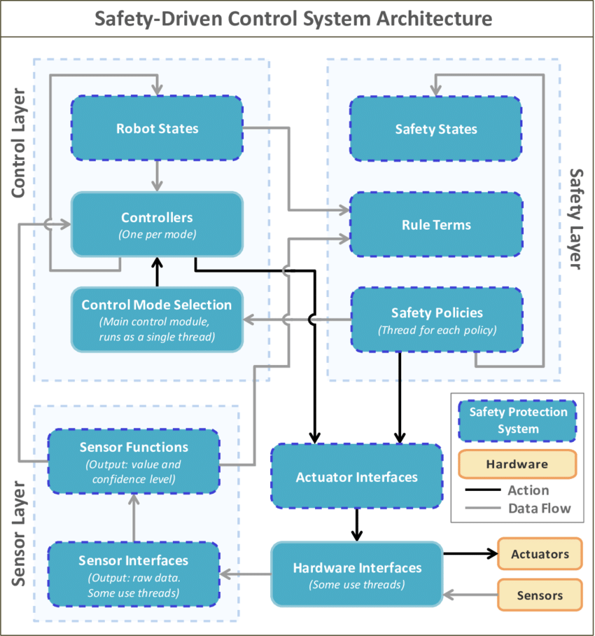
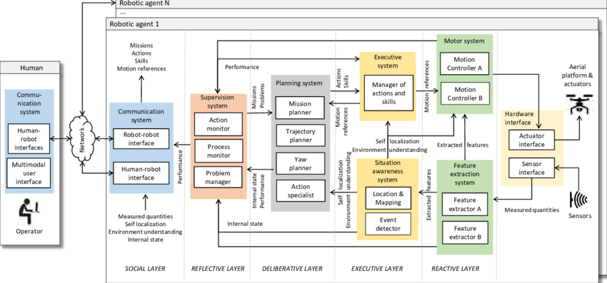
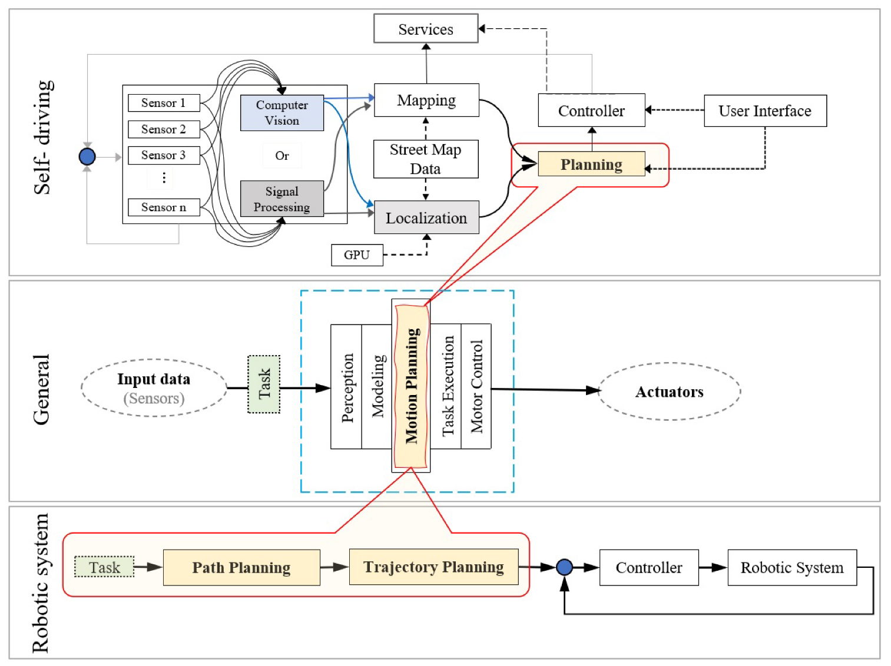
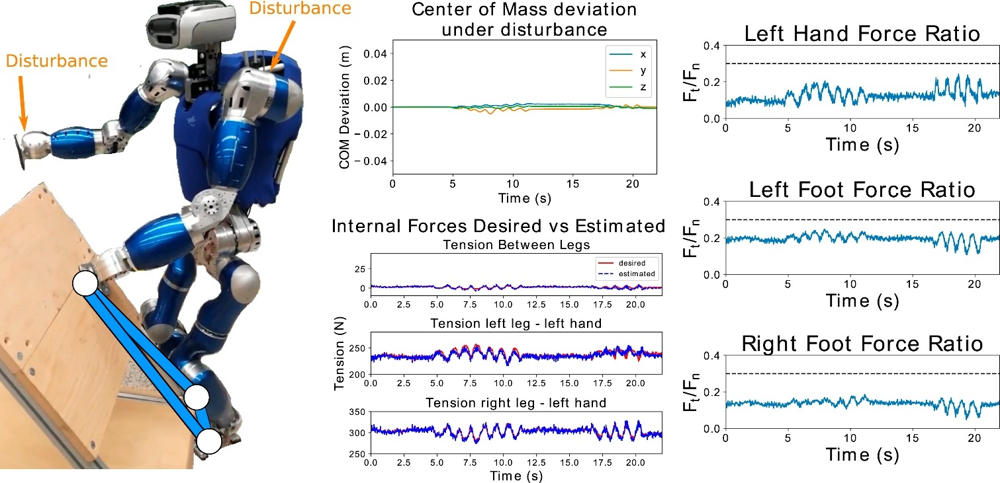

Chapter 1 — Executive Summary
Robot Skill Protocol (RSP) v0.3
1.1 The Structural Problem in Robotics Software
Over the past decade, robotics has seen remarkable progress in hardware, sensors, and AI models. Industrial manipulators have become more precise and affordable; mobile robots have matured from research prototypes into deployed products; and foundation models are rapidly expanding into perception, language, and action.
Yet despite these advances, robot software has failed to scale.
Today, most robot capabilities are still delivered as:
- Project-specific integration code
- Robot-vendor-locked SDK implementations
- One-off ROS graphs tightly coupled to hardware
As a result, deploying the same capability—for example, “bin picking,” “mobile docking,” or “visual inspection”—across different robots, factories, or customers repeatedly requires new engineering effort. Knowledge does not accumulate at the ecosystem level; it remains trapped inside individual projects.
This is not a tooling problem.
It is a missing abstraction problem.
1.2 Why Existing Abstractions Are Not Enough
Robotics middleware such as ROS provides excellent communication primitives—topics, services, and actions—but these primitives operate at the wrong level of abstraction for scaling robotics software:
- They define how components communicate, not what capability is provided
- They lack explicit semantic contracts, safety envelopes, and lifecycle management
- They are not designed to be portable, discoverable, or tradable
As a result, robot software remains project-centric rather than capability-centric.
In contrast, modern software ecosystems scale by elevating higher-level abstractions:
- Functions → Services
- Services → Products
- Products → Marketplaces
Robotics has not yet completed this transition.
1.3 The Core Insight: Skills as First-Class Assets
Human operators, system integrators, and customers do not think in terms of ROS nodes or control loops.
They think in terms of skills:
- Pick an object
- Navigate to a location
- Inspect a surface
- Assemble a component
A robot skill represents a bounded, meaningful capability with:
- Clear intent
- Defined inputs and outputs
- Measurable outcomes
- Safety constraints
The central insight behind Robot Skill Protocol (RSP) is simple but profound:
If skills become first-class, portable, and verifiable assets, robotics software can finally scale.
1.4 From Robot-Centric Code to Skill Economy


Figure 1-1. From Robot-Centric Code to Skill Economy
What this figure conveys
- Left:
Each robot platform embeds its own robot-specific code. Capabilities are duplicated and tightly coupled to hardware. - Middle:
A shared Skill Layer abstracts robot-specific details and exposes reusable capabilities. - Right:
Skills are published, discovered, and reused through a Skill Store, enabling cross-robot deployment.
This transition mirrors how cloud computing evolved from machine-specific scripts to reusable services and APIs.
1.5 The Agent*Skill Paradigm
At the heart of RSP v0.3 is a strict separation of concerns:
- Agents decide what to do
- Skills define how it is done
Agents never directly control motors, tune controllers, or manage safety envelopes. Instead, they operate purely in the space of skills.


Figure 1-2. The Agent*Skill Interaction Model
Key message of the figure
- Agents reason at the task and plan level
- Skills encapsulate execution logic and safety
- The Skill Runtime is the only trusted boundary to physical robots
This Agent*Skill model allows intelligence (LLMs, planners, VLA models) to evolve independently from hardware and control stacks.
1.6 What Robot Skill Protocol (RSP) v0.3 Defines
Robot Skill Protocol v0.3 is not a framework, SDK, or robot operating system.
It is a protocol-level specification that defines:
- How skills are described
– via machine-readable manifests and formal contracts - How skills are discovered and matched
– based on capability profiles, constraints, and trust requirements - How skills are invoked and executed
– through standardized semantics independent of transport or middleware - How safety and trust are enforced
– as protocol primitives, not application add-ons - How skills evolve over time
– with versioning, evaluation, and deprecation
1.7 Why RSP v0.3, and Why Now
Several industry trends converge to make RSP both necessary and timely:
- Agentic AI systems are becoming capable of high-level reasoning but lack safe execution interfaces
- Simulation platforms enable large-scale validation and benchmarking of robot behavior
- Robotics markets are shifting toward long-tail, application-specific deployments
- Developers and SMEs need reusable building blocks rather than bespoke integrations
RSP v0.3 incorporates lessons from earlier iterations by:
- Making safety and capability constraints explicit
- Embracing agent-native orchestration
- Designing for marketplace and ecosystem growth from day one
1.8 The Long-Term Vision
The ultimate vision of RSP is not merely better robot software tooling.
It is the emergence of a global robot skill economy, where:
- Capabilities are developed once and deployed everywhere
- Innovation is shared across robots, vendors, and industries
- Robotics transitions from hardware-centric delivery to capability-centric value creation
RSP v0.3 establishes the foundational contract required to make this vision achievable.
Chapter 2 — Background & Problem Definition
Robot Skill Protocol (RSP) v0.3
2.1 Robotics Software Has Not Scaled
Despite continuous progress in robot hardware, sensors, and AI models, robotics software remains fundamentally project-centric. Each deployment is typically engineered as a bespoke system, tightly bound to a specific robot configuration, environment, and customer requirement.
Even when two projects share similar functional goals—such as bin picking or mobile navigation—the underlying software is often rewritten or heavily modified. Knowledge does not accumulate across deployments; instead, integration cost resets with every new project.
This structural inefficiency is the root cause of slow scaling in robotics.
2.2 Fragmentation Across the Robotics Stack

Figure 2-1. Fragmentation Across the Robotics Software Stack
Fragmentation exists simultaneously across:
- Robot vendors and hardware platforms
- Software middleware and SDKs
- Functional layers (perception, planning, control, integration)
The same capability is repeatedly reimplemented in different silos, making reuse the exception rather than the norm.
2.3 Why Existing APIs and Middleware Are Insufficient
Middleware such as ROS provides communication primitives, but does not define:
- Semantic meaning of capabilities
- Safety envelopes
- Lifecycle management
- Trust and validation signals
APIs expose how to call functions, not what capability is being provided.
As a result, they cannot support automated discovery, safe agent-driven execution, or ecosystem-level reuse.
2.4 Project-Centric vs Capability-Centric Robotics


Figure 2-2. Project-Centric vs Capability-Centric Robotics
In a project-centric model:
- Software value is trapped inside projects
- Scaling requires proportional engineering effort
In a capability-centric model:
- Skills are reusable assets
- Value compounds across deployments
RSP is designed explicitly to enable the latter.
2.5 Problem Statement
Robotics lacks a standardized, safe, and portable abstraction for reusable robot capabilities.
Without such an abstraction:
- Agentic AI cannot scale safely
- Ecosystems cannot form
- Economic leverage remains limited
Chapter 3 — Design Principles
Robot Skill Protocol (RSP) v0.3
3.1 Principles as Architectural Constraints
RSP is not a collection of features—it is a system constrained by explicit design principles. These principles determine what RSP must do, and equally importantly, what it must not do.
3.2 Core Design Principles


Figure 3-1. RSP Design Principles
The core principles are:
- Skill-first abstraction
- Agent-native design
- Capability-bound execution
- Safety-by-design
- Model and implementation agnosticism
- Cloud–edge–robot co-design
These principles act as hard constraints on all protocol decisions.
3.3 Agent–Execution Separation
Agents decide what to do.
Skills define how it is executed safely.
This separation prevents:
- Agent hallucinations from directly affecting hardware
- Safety logic from being duplicated inconsistently
3.4 What RSP Intentionally Does Not Define


Figure 3-2. Scope Boundaries of RSP
RSP deliberately does not define:
- Planning algorithms
- Control strategies
- World model representations
- Machine learning architectures
By constraining scope, RSP remains stable while surrounding technologies evolve.
3.5 Minimalism and Orthogonality
RSP defines a minimal set of orthogonal concepts. Each concept has a single responsibility, reducing coupling and enabling independent evolution of system layers.
Chapter 4 — Core Concepts & Terminology
Robot Skill Protocol (RSP) v0.3
4.1 Why Precise Concepts Matter
One of the root causes of fragmentation in robotics is terminological ambiguity.
Terms such as behavior, capability, action, skill, and task are often used interchangeably across teams, vendors, and frameworks. This ambiguity leads to:
- unclear system boundaries,
- inconsistent interfaces,
- and brittle integrations that do not scale.
RSP v0.3 therefore defines a minimal, explicit ontology.
Each concept has:
- a clear responsibility,
- a strict boundary,
- and a defined relationship to other concepts.
These definitions are normative within the scope of RSP.
4.2 Skill
Definition
A Skill is a bounded, executable robot capability that:
- performs a specific class of physical or cyber-physical actions,
- exposes a formal interface,
- executes under a runtime that enforces safety and policy.
A skill is not:
- a raw control loop,
- a middleware node,
- or an agent-generated action sequence.
Properties of a Skill
- Intent-bounded: expresses what capability is provided, not arbitrary behavior.
- Reusable: can be executed across robots with compatible capabilities.
- Inspectable: exposes inputs, outputs, constraints, and telemetry.
- Governable: versioned, validated, and policy-controlled.
Skills are the atomic execution units of RSP.
4.3 Agent
Definition
An Agent is a reasoning entity responsible for:
- interpreting goals and context,
- decomposing tasks into skills,
- selecting, sequencing, and parameterizing skills,
- responding to outcomes and failures.
Agents may be implemented using:
- LLMs,
- VLA models,
- symbolic planners,
- or hybrid systems.
Explicit Restriction
In RSP:
Agents are prohibited from directly controlling robot actuators.
They may only invoke skills through the RSP interface.
This restriction is structural, not advisory.
4.4 Agent–Skill Boundary


Figure 4-1. Agent–Skill Boundary
This boundary is the single most important concept in RSP.
- Above the boundary:
- reasoning, planning, uncertainty, learning.
- Below the boundary:
- deterministic execution, safety enforcement, hardware constraints.
Benefits:
- Agent innovation does not compromise physical safety.
- Execution remains predictable and auditable.
- System responsibilities are cleanly separated.
4.5 Skill Manifest
Definition
A Skill Manifest is the canonical, declarative description of a skill.
It defines:
- skill identity and version,
- required robot capabilities,
- input/output schemas,
- execution modes,
- safety constraints and invariants,
- trust and validation artifacts.
The manifest is:
- machine-readable,
- transport-agnostic,
- and the single source of truth for tooling, runtime enforcement, and store indexing.
4.6 Capability Profile
Definition
A Capability Profile describes what a robot (or simulator) can safely support.
It may include:
- kinematic structure and reach,
- payload limits,
- sensors and perception modalities,
- compute and runtime features,
- certifications and safety ratings.
Capability profiles enable automatic compatibility checks before skill execution.
4.7 Skill Runtime



Figure 4-2. Skill Runtime Responsibilities
A Skill Runtime is the trusted execution environment that:
- validates preconditions,
- enforces constraints and invariants during execution,
- mediates access to robot hardware and middleware,
- emits structured telemetry and events.
The runtime is non-bypassable.
It is the final authority over execution safety.
4.8 Skill Contract
Definition
A Skill Contract formalizes execution guarantees and assumptions.
It consists of:
- Preconditions
Conditions that must hold before execution begins. - Postconditions
Guarantees provided upon successful completion. - Invariants
Conditions that must hold throughout execution.
Contracts enable:
- static validation,
- runtime enforcement,
- and reliable skill composition.
4.9 Task (Non-Normative)
In RSP, a Task is a higher-level goal or objective.
Tasks are:
- interpreted by agents,
- decomposed into skills,
- not part of the execution protocol itself.
This distinction prevents protocol complexity from exploding upward into goal semantics.
4.10 Relationship Overview


Figure 4-3. Core Concepts and Relationships
- Agents reason and plan.
- Skills define executable capabilities.
- Manifests declare interfaces and constraints.
- Capability Profiles gate compatibility.
- Runtimes enforce safety and execution.
- Robots and simulators remain below the protocol boundary.
4.11 What RSP Intentionally Does Not Define
To preserve flexibility, RSP does not define:
- internal skill algorithms,
- agent planning strategies,
- world model representations,
- learning methods.
These remain innovation spaces.
Chapter 5 — RSP Architecture Overview
Robot Skill Protocol (RSP) v0.3
5.1 Architectural Goals
The architecture of Robot Skill Protocol (RSP) v0.3 is designed to satisfy five non-negotiable goals:
- Strict Agent–Execution Separation
Agents must never directly control hardware. - Skill-Centric Execution Boundary
All robot actions must be mediated through skills. - Safety as a First-Class Architectural Concern
Safety must be enforced structurally, not procedurally. - Compatibility with Existing Robotics Stacks
RSP must coexist with ROS2, MoveIt, Nav2, Isaac, and proprietary systems. - Ecosystem Scalability
The architecture must support marketplaces, versioning, and multi-vendor deployment.
These goals lead naturally to a layered reference architecture, rather than a monolithic framework.
5.2 The Four-Layer RSP Architecture



Figure 5-1. RSP Four-Layer Reference Architecture
Overview of Layers
From top to bottom, RSP defines four conceptual layers:
- Agent Layer
- Skill Orchestration Layer
- Skill Runtime Layer
- Robot / Simulator Layer
Each layer has a clearly defined responsibility and a narrow interface to adjacent layers.
5.3 Agent Layer
Responsibility
The Agent Layer is responsible for:
- Task understanding and goal reasoning
- Planning and decision-making
- Selecting and sequencing skills
- Handling contingencies and recovery
Agents operate purely in semantic space, not physical space.
Key Characteristics
- Robot-agnostic
- Hardware-independent
- Skill-aware, not controller-aware
An agent may be implemented using:
- Large Language Models (LLMs)
- Vision–Language–Action (VLA) models
- Symbolic planners
- Hybrid architectures
RSP intentionally places no constraints on internal agent design, as long as the agent:
Invokes robot behavior exclusively through skills.
5.4 Skill Orchestration Layer
Responsibility
The Skill Orchestration Layer bridges high-level intent and concrete execution. It is responsible for:
- Skill discovery and matching
- Capability compatibility checks
- Skill composition and chaining
- Retry, fallback, and substitution logic
This layer can be implemented as:
- A standalone service
- Part of an agent runtime
- A platform-level component
Why Orchestration Is a Separate Layer
Separating orchestration from agents allows:
- Reuse of orchestration logic across agents
- Centralized policy enforcement
- Consistent behavior across deployments
It also prevents agents from embedding fragile execution assumptions.
5.5 Skill Runtime Layer
Responsibility
The Skill Runtime Layer is the trusted execution boundary of RSP.
It is responsible for:
- Executing skills
- Enforcing constraints and policies
- Monitoring execution state
- Collecting telemetry
All physical actions must pass through this layer.
Runtime as a Safety Boundary
The runtime ensures that:
- Preconditions are validated
- Invariants are continuously enforced
- Violations result in deterministic termination
This design ensures that even incorrect or hallucinated agent plans cannot directly cause unsafe behavior.
5.6 Robot / Simulator Layer
Responsibility
The bottom layer contains the actual robot control stacks, including:
- ROS2 nodes
- MoveIt motion planning
- Nav2 navigation
- NVIDIA Isaac
- Vendor-specific controllers
RSP does not replace these systems.
Instead, it defines a clean interface above them, allowing:
- Legacy systems to be reused
- New robots to be onboarded incrementally
5.7 Agent*Skill Interaction Flow


Figure 5-2. Agent*Skill Interaction Flow
Step-by-Step Flow
- Intent Formation
The agent determines a goal (e.g., “pick object A”). - Skill Discovery
The orchestration layer queries available skills. - Capability Matching
Candidate skills are filtered against the robot’s capability profile. - Skill Invocation
The agent invokes the selected skill via Skill.call. - Runtime Enforcement
The skill runtime validates preconditions and enforces constraints. - Execution & Monitoring
The robot executes under continuous supervision. - Result Reporting
Structured outcomes and telemetry are returned to the agent.
5.8 Deployment Patterns


Figure 5-3. Typical RSP Deployment Patterns
RSP supports multiple deployment topologies:
On-Robot Execution
- Skill runtime runs directly on the robot controller
- Low latency, high determinism
Edge-Orchestrated Execution
- Orchestration and policy at the edge
- Skills executed close to hardware
Cloud-Assisted Execution
- Skill store, validation, analytics in the cloud
- No real-time control loops in the cloud
This flexibility is essential for industrial and regulated environments.
5.9 Relationship with Existing Frameworks
RSP and ROS2
- ROS2 remains the communication backbone
- RSP operates above ROS, not instead of it
RSP and MoveIt / Nav2
- Motion planning remains internal to skills
- RSP standardizes how these capabilities are exposed
RSP and Simulation (Isaac, Gazebo)
- Simulation is a first-class validation environment
- Skills can be verified before deployment
5.10 Why This Architecture Scales
The RSP architecture scales because:
- Agents scale horizontally (new reasoning models)
- Skills scale vertically (better implementations)
- Runtimes enforce invariants (safety and trust)
- Stores enable ecosystems (distribution and incentives)
Each layer evolves independently without breaking the others.
Chapter 6 — Robot Skill Lifecycle
Robot Skill Protocol (RSP) v0.3
6.1 Why a Skill Lifecycle Is Necessary
In traditional robotics projects, software artifacts are treated as project deliverables:
- Code is written for a specific robot
- Integrated once
- Maintained informally, if at all
This approach fundamentally limits scalability.
If skills are to become first-class assets, they must be treated like modern software products — with a clear, explicit lifecycle.
Robot Skill Protocol (RSP) v0.3 defines a standardized skill lifecycle that governs how skills are:
- Created
- Distributed
- Executed
- Evaluated
- Evolved
- Retired
This lifecycle is a protocol-level concept, not merely a development guideline.
6.2 Overview of the Skill Lifecycle


Figure 6-1. The Robot Skill Lifecycle
The RSP lifecycle is intentionally designed as a closed loop, reflecting continuous improvement rather than one-time delivery.
The major stages are:
- Authoring
- Registration
- Discovery & Matching
- Invocation
- Execution & Monitoring
- Evaluation & Versioning
- Deprecation & Retirement
6.3 Skill Authoring
Purpose
Skill authoring is the process by which a developer creates a new robot capability that complies with RSP.
Key Activities
During authoring, the developer:
- Implements the skill logic (perception, planning, control)
- Defines the Skill Manifest
- Specifies preconditions, constraints, and invariants
- Selects execution modes (sync / async / streaming)
Importantly, authoring does not require:
- Knowledge of specific agents
- Knowledge of downstream applications
This decoupling allows skills to be reused across multiple contexts.
6.4 Skill Registration (Skill.register)
Purpose
Registration makes a skill visible and usable within an RSP ecosystem.
Registration Artifacts
A registered skill typically includes:
- Skill manifest
- Runtime endpoint
- Version identifier
- Verification and test artifacts
Registration does not imply trust or production readiness.
It only establishes existence and accessibility.
6.5 Skill Discovery & Matching
Purpose
Discovery enables agents or platforms to identify suitable skills for a given task.
Matching Criteria
Skills are matched based on:
- Required capabilities
- Input/output compatibility
- Declared constraints
- Trust and certification level
This process may be:
- Automated (agent-driven)
- Assisted (human-in-the-loop)
- Policy-constrained (enterprise rules)
Discovery is a decision point, not a static lookup.
6.6 Skill Invocation (Skill.call)
Purpose
Invocation represents the transition from intent to execution.
Invocation Semantics
A skill is invoked with:
- Structured inputs
- Execution mode
- Policy context (safety, resource limits, trust)
Invocation is always mediated by the Skill Runtime, never directly by the agent.
This guarantees that:
- Preconditions are validated
- Constraints are enforced
- Execution is observable
6.7 Skill Execution & Monitoring
Purpose
Execution is the stage where abstract capability becomes physical action.
Runtime Responsibilities
During execution, the Skill Runtime:
- Continuously enforces invariants
- Monitors system and environment state
- Collects logs, metrics, and traces
If violations occur:
- Execution is deterministically terminated
- Structured errors are reported
- Recovery options may be triggered
Observability at this stage is mandatory and standardized.
6.8 Skill Evaluation
Purpose
Evaluation determines whether a skill performs as expected across:
- Robots
- Environments
- Tasks
Evaluation Signals
Evaluation may consider:
- Success / failure rates
- Performance metrics
- Safety incidents
- Operator feedback
Evaluation is essential for:
- Trust building
- Skill ranking
- Continuous improvement
6.9 Skill Versioning
Why Versioning Matters
Skills evolve:
- Bugs are fixed
- Performance improves
- Capabilities expand
Without explicit versioning, reuse becomes unsafe.
Versioning Principles
RSP encourages:
- Semantic versioning
- Backward compatibility declarations
- Explicit deprecation notices
Agents and platforms can then make informed selection decisions.
6.10 Skill Deprecation & Retirement
Purpose
Not all skills should live forever.
Deprecation allows:
- Signaling that a skill should no longer be used
- Providing migration paths
Retirement removes a skill from active use without breaking dependent systems.
Safe Retirement
A skill may only be fully retired when:
- No active dependencies exist
- Replacement strategies are available
- Policies permit removal
This prevents ecosystem fragmentation.
6.11 Lifecycle as an Ecosystem Enabler
By formalizing the skill lifecycle, RSP enables:
- Independent developers to publish skills
- Enterprises to enforce governance
- Agents to reason about trust and maturity
- Platforms to support marketplaces
The lifecycle transforms skills from engineering artifacts into economic units.
Chapter 7 — Skill Interface Specification
Robot Skill Protocol (RSP) v0.3
7.1 Purpose and Scope of the Skill Interface
The Skill Interface is the most critical contract defined by Robot Skill Protocol.
It specifies how an agent interacts with a skill, without:
- Knowing how the skill is implemented
- Knowing what robot executes it
- Bypassing safety or policy constraints
This interface must simultaneously satisfy:
- Machine readability (for agents and tooling)
- Human interpretability (for developers and operators)
- Protocol stability (for ecosystem scaling)
RSP v0.3 deliberately defines the interface at the semantic and behavioral level, not at the transport or middleware level.
7.2 Design Principles of the Skill Interface
The Skill Interface is governed by the following principles:
- Declarative over Procedural
Interfaces describe what a skill does, not how. - Explicit Contracts
Preconditions, constraints, and outputs must be explicit. - Transport-Agnostic
REST, gRPC, DDS, or other transports are implementation choices. - Safety-First
Every interface element must be enforceable at runtime. - Agent-Reasonable
Agents must be able to reason about success, failure, and alternatives.
7.3 Skill Manifest as the Canonical Interface

Figure 7-1. Skill Manifest as the Canonical Interface
Role of the Manifest
In RSP, the Skill Manifest is the canonical interface definition.
Everything else—SDKs, APIs, runtime adapters—is derived from it.
The manifest enables:
- Skill discovery
- Capability matching
- Safety enforcement
- Versioning and governance
7.4 Manifest Structure Overview
A typical Skill Manifest contains the following sections:
1. Identity & Metadata
- Skill name
- Semantic version
- Author / organization
- Domain classification
2. Capability Requirements
- Required robot capabilities
- Sensor dependencies
- Runtime dependencies
3. Interface Definition
- Input schema
- Output schema
- Execution modes
4. Contract Definition
- Preconditions
- Postconditions
- Invariants
5. Constraints & Limits
- Motion constraints
- Force / torque limits
- Workspace restrictions
6. Trust & Validation
- Simulation coverage
- Verification artifacts
- Certification level (optional)
This structure is intentionally flat and explicit, avoiding implicit assumptions.
7.5 Input and Output Schemas
Structured Inputs
Inputs are defined using structured schemas with:
- Explicit types
- Units and coordinate frames
- Required vs optional fields
Example input concepts:
- Target pose
- Object identifiers
- Tolerance parameters
This enables:
- Static validation
- Automatic tooling
- Cross-skill composability
Structured Outputs
Outputs describe:
- Execution result
- Outcome data
- Diagnostic information
Outputs must be:
- Deterministic
- Machine-readable
- Suitable for agent-level reasoning
7.6 Preconditions
Preconditions define what must be true before a skill can start.
Examples:
- Robot is stationary
- Gripper is empty
- Target object pose confidence ≥ threshold
Preconditions serve two purposes:
- Early rejection of invalid plans
- Agent reasoning about feasibility
They are checked before execution begins.
7.7 Constraints and Invariants


Figure 7-2. Constraints and Invariants Enforced by the Runtime
Constraints
Constraints define allowed operational envelopes:
- Speed limits
- Force limits
- Workspace bounds
Invariants
Invariants define conditions that must hold at all times:
- No entry into forbidden zones
- No violation of safety thresholds
Constraints and invariants are enforced continuously by the Skill Runtime, not by the agent.
7.8 Execution Semantics
RSP defines three standard execution semantics:
Synchronous Execution
- Blocking call
- Returns upon completion or failure
- Suitable for short, deterministic actions
Asynchronous Execution
- Non-blocking
- Returns a handle for monitoring
- Suitable for long-running tasks
Streaming Execution
- Continuous input/output
- Suitable for perception-driven or adaptive skills
Agents select execution mode explicitly; runtimes enforce semantics consistently.
7.9 Error Model and Failure Semantics
RSP standardizes error categories to enable robust orchestration:
- PreconditionViolation
- ConstraintViolation
- ExecutionFailure
- ExternalInterruption
- Timeout
Errors are:
- Explicit
- Typed
- Observable
This enables agents to:
- Retry
- Fallback
- Replan
Without relying on brittle heuristics.
7.10 Observability and Telemetry Hooks

Figure 7-3. Skill Observability and Telemetry
Every skill execution exposes standardized observability hooks:
- Logs (events, warnings, errors)
- Metrics (latency, success rate)
- Traces (execution timeline)
Observability is mandatory in RSP v0.3.
A skill that cannot be observed cannot be trusted.
7.11 Why the Interface Is Intentionally Strict
RSP deliberately rejects:
- Implicit behavior
- Undeclared side effects
- Hidden assumptions
This strictness is what allows:
- Cross-robot reuse
- Safe agent autonomy
- Marketplace-level trust
Looser interfaces may be convenient locally, but they do not scale.
Chapter 8 — Safety & Trust Model
Robot Skill Protocol (RSP) v0.3
8.1 Why Safety Must Be a Protocol Primitive
As robots gain autonomy through agentic systems and foundation models, safety can no longer be treated as an application-level concern or a best-effort implementation detail.
Traditional approaches often assume:
- Agents will generate “reasonable” plans
- Developers will correctly implement safety checks
- Operators will intervene when something goes wrong
These assumptions do not hold at scale.
Robot Skill Protocol (RSP) v0.3 is founded on a stronger premise:
Safety must be embedded into the protocol itself, not delegated to agents or developers.
This means safety guarantees must hold regardless of agent intelligence, implementation quality, or deployment context.
8.2 Threat Model and Failure Modes
To design a robust safety model, RSP explicitly considers realistic failure modes:
- Agent errors
Hallucinated plans, invalid assumptions, or incomplete context. - Skill implementation bugs
Software defects, numerical instability, or edge-case failures. - Environment uncertainty
Sensor noise, occlusions, unexpected obstacles. - Integration drift
Skill reused on robots or environments it was not designed for.
The safety model must remain effective even when multiple failure modes occur simultaneously.
8.3 Safety-in-Depth Architecture

Figure 8-1. Safety-in-Depth Architecture in RSP
RSP adopts a defense-in-depth approach, with independent safety mechanisms at multiple layers:
- Declarative Safety in the Skill Manifest
- Capability-Bound Skill Selection
- Runtime Safety Guards
- Policy Enforcement and Governance
- Human-in-the-Loop Escalation
Each layer is designed to fail safely and independently.
8.4 Declarative Safety in the Skill Manifest
The first safety barrier is declarative and explicit.
Each skill manifest defines:
- Preconditions (what must be true before execution)
- Constraints (allowed operational envelope)
- Invariants (conditions that must always hold)
Because these are machine-readable, they can be:
- Validated statically
- Enforced dynamically
- Audited after execution
This shifts safety from implicit code logic to explicit contracts.
8.5 Capability-Bound Execution
A central safety principle in RSP is:
A skill may only execute on robots whose capability profiles fully satisfy the skill’s declared requirements.
This prevents unsafe reuse such as:
- Running a high-force manipulation skill on a lightweight robot
- Executing a precision task without sufficient sensing capability
Capability matching is performed before execution and is non-overridable by agents.
8.6 Runtime Safety Guards



Figure 8-2. Runtime Safety Guards and Invariant Enforcement
The Skill Runtime acts as the final and most critical safety boundary.
Runtime Responsibilities
During execution, the runtime continuously enforces:
- Motion limits (velocity, acceleration)
- Force and torque thresholds
- Workspace and zone restrictions
- Resource usage limits
If any invariant is violated:
- Execution is immediately terminated
- The robot is brought to a safe state
- A structured safety event is emitted
This enforcement is non-negotiable and agent-independent.
8.7 Policy-Based Safety and Governance
Beyond individual skills, organizations require system-level safety governance.
RSP supports policy enforcement such as:
- Only certified skills may run in production
- Certain skills require human approval
- Execution limited to specific time windows or locations
Policies are enforced:
- At skill registration
- At discovery and selection
- At invocation time
This enables consistent safety posture across fleets and sites.
8.8 Simulation-First Safety Validation


Figure 8-3. Simulation-First Safety Validation Flow
RSP strongly encourages a simulation-first approach:
- Skill authored and instrumented
- Tested across simulated environments
- Edge cases and failure scenarios evaluated
- Verification artifacts generated
- Skill promoted to production eligibility
Simulation does not replace real-world testing, but it dramatically reduces risk and increases coverage.
8.9 Certification-Ready Trust Artifacts
To support industrial and regulated deployments, RSP allows skills to attach trust artifacts, including:
- Test coverage reports
- Safety analyses
- Compliance documentation
- Third-party certification results
These artifacts are:
- Versioned
- Auditable
- Enforceable by policy
This makes RSP compatible with existing safety and compliance workflows.
8.10 Human-in-the-Loop Escalation
Autonomy does not eliminate responsibility.
When uncertainty exceeds acceptable thresholds:
- Skill execution may pause
- Control may be escalated to a human operator
- Decisions are logged and traceable
Human-in-the-loop mechanisms provide a controlled safety valve without collapsing into full teleoperation.
8.11 Trust as an Emergent Property
In RSP, trust is not binary.
It emerges from:
- Repeated successful executions
- Transparent observability
- Independent verification
- Clear accountability
By standardizing how trust signals are generated and consumed, RSP enables agents and organizations to make informed, risk-aware decisions.
8.12 Why This Safety Model Scales
RSP’s safety model scales because it is:
- Protocol-level, not application-level
- Declarative, not heuristic
- Runtime-enforced, not agent-dependent
This allows increasingly powerful agents to be deployed without proportionally increasing risk.
Chapter 9 — Agentic Orchestration Model
Robot Skill Protocol (RSP) v0.3
9.1 From Skill Invocation to Orchestration
Invoking a single skill is straightforward.
Operating robust robotic systems in the real world is not.
Real deployments must handle:
- Partial observability
- Non-deterministic outcomes
- Hardware variability
- Environmental change
Agentic orchestration is the layer that transforms individual skills into coherent, resilient behavior.
RSP v0.3 explicitly defines this layer—not as a monolithic planner, but as a protocol-compliant pattern for composing skills safely.
9.2 Responsibilities of the Orchestration Layer
The orchestration layer sits between agent reasoning and skill execution. Its responsibilities include:
- Skill selection and substitution
- Sequencing and composition
- Conditional branching
- Retry, fallback, and recovery
- Policy- and trust-aware execution
Crucially, orchestration is skill-centric, not controller-centric.
All decisions are expressed in terms of skills and their contracts.
9.3 Single-Agent Orchestration
In the simplest case, a single agent orchestrates skills for one robot.
Typical Workflow
- Interpret task intent
- Decompose into skill-level steps
- Select compatible skills
- Invoke skills under policy constraints
- Monitor outcomes and adapt
This model already enables:
- Dynamic replanning
- Skill substitution
- Graceful degradation
9.4 Multi-Agent Orchestration
RSP does not restrict orchestration to a single agent.
Multiple agents may:
- Coordinate on shared goals
- Control different robots
- Specialize in planning, perception, or supervision


Figure 9-1. Multi-Agent Skill Orchestration
Key idea
- Agents communicate at the intent and skill level, not via low-level signals
- Skills remain the only execution boundary
This enables scalable coordination without entangling control logic.
9.5 Skill Composition and Chaining
Skills are designed to be composable by contract.
A composite behavior is formed by chaining skills where:
- The postconditions of Skill A satisfy the preconditions of Skill B
- Constraints are compatible across the chain


Figure 9-2. Skill Composition as a Directed Graph
Composition is expressed as a directed acyclic graph (DAG):
- Nodes: skills
- Edges: dependency and control flow
This representation allows:
- Static validation
- Partial execution
- Local recovery
9.6 Conditional Execution and Branching
Real-world execution requires conditional logic:
- If object not detected → retry perception skill
- If grasp fails → switch gripper or strategy
- If path blocked → replan navigation
RSP supports conditional branching based on:
- Structured outputs
- Error types
- Telemetry signals
Conditions are evaluated outside skills, preserving encapsulation.
9.7 Fallback, Retry, and Recovery


Figure 9-3. Fallback and Recovery in Skill Orchestration
When a skill fails, orchestration logic may:
- Retry the same skill
- Substitute an alternative skill
- Invoke a recovery skill
- Replan the task
Because failures are typed and explicit (Chapter 7), recovery is systematic rather than heuristic.
9.8 Context and World Model Injection
Skills are intentionally context-minimal.
Agents may inject additional context at invocation time, such as:
- World state summaries
- Perception results
- Task-level constraints
This allows:
- Skills to remain reusable
- Agents to leverage richer world models
- Clear ownership of state and reasoning
Context injection is explicit and auditable.
9.9 Interaction with World Models
RSP does not define a world model.
However, it defines how world models interact with skills:
- World models inform agent decisions
- Agents select and parameterize skills
- Skills execute within declared constraints
This separation prevents world-model assumptions from leaking into execution logic.
9.10 Integration with LLMs, VLA, and Policy Models
Modern agentic systems increasingly rely on:
- LLMs for reasoning and planning
- VLA models for perception-to-action
- Classical policies for control
RSP provides a stable execution boundary for all of them.
Regardless of intelligence source:
- Skills are invoked the same way
- Safety is enforced the same way
- Observability is preserved
This future-proofs the ecosystem against rapid model evolution.
9.11 Orchestration Is Not Control
A common misunderstanding is to treat orchestration as a replacement for control logic.
RSP draws a strict line:
- Control lives inside skills
- Orchestration lives above skills
This separation allows:
- High-level autonomy
- Low-level determinism
- Clear safety boundaries
9.12 Why Agentic Orchestration Scales
The RSP orchestration model scales because it is:
- Contract-driven
- Failure-aware
- Policy-enforced
- Agent-agnostic
It enables increasingly autonomous behavior without sacrificing predictability or safety.
Chapter 10 — Robot Skill Store & Marketplace
Robot Skill Protocol (RSP) v0.3
10.1 Why a Skill Store Is Essential
Protocols alone do not create ecosystems.
History has repeatedly shown that large-scale technology adoption requires:
- A standardized interface
- A distribution mechanism
- Incentives for contributors
In robotics today, even when reusable capabilities exist, there is no systematic way to discover, evaluate, trust, and deploy them across organizations and robot platforms.
The Robot Skill Store addresses this missing layer.
It transforms robot skills from internal engineering artifacts into discoverable, distributable, and economically viable assets.
10.2 Role of the Skill Store in the RSP Ecosystem
The Skill Store is not merely an app store clone.
It is a protocol-aware platform tightly coupled with RSP semantics.
Its core roles include:
- Skill registration and indexing
- Metadata-driven discovery
- Trust and validation signaling
- Licensing and access control
- Distribution and lifecycle management
Crucially, the Skill Store does not execute skills.
Execution remains the responsibility of Skill Runtimes.
10.3 High-Level Skill Store Architecture

Figure 10-1. Robot Skill Store Architecture
Key Components
- Skill Registry
Stores manifests, versions, and metadata. - Index & Search Engine
Enables discovery by capability, domain, constraints, and trust level. - Trust & Validation Layer
Aggregates verification artifacts, test coverage, and usage signals. - Licensing & Policy Engine
Controls access, pricing, and enterprise policies. - Distribution Layer
Delivers skill packages and updates to runtimes.
This architecture ensures the store remains agnostic to robot hardware and execution details, while being deeply aware of protocol semantics.
10.4 Skill Metadata and Discovery
Metadata as a First-Class Asset
In RSP, metadata is not auxiliary—it is central.
Each skill is indexed by:
- Declared capabilities
- Input/output schema
- Constraints and invariants
- Supported execution modes
- Trust and certification level
This allows both humans and agents to query the store intelligently.
Discovery by Agents
Agents may issue queries such as:
“Find a manipulation skill compatible with Robot X, certified for production, capable of handling objects up to 2kg.”
Discovery thus becomes a reasoned selection process, not a keyword search.
10.5 Trust, Rating, and Verification Signals


Figure 10-2. Trust and Verification Signals in the Skill Store
Trust in the Skill Store is multi-dimensional and evidence-based.
Signals may include:
- Simulation and test coverage
- Deployment history across robots
- Safety incident records
- Operator feedback
- Third-party certification
Importantly, trust is:
- Transparent (artifacts are inspectable)
- Version-specific
- Policy-enforceable
This enables risk-aware adoption at scale.
10.6 Licensing and Pricing Models
The Skill Store supports diverse economic models, including:
- Open-source skills
Community-driven innovation and reference implementations. - Commercial skills
Subscription-based, per-use, or per-deployment licensing. - Enterprise-only skills
Private distribution within an organization.
RSP does not mandate a business model—it enables coexistence of multiple models within a single ecosystem.
10.7 Public vs Enterprise Skill Stores


Figure 10-3. Public and Enterprise Skill Store Models
Public Skill Store
- Open ecosystem
- Broad developer participation
- Marketplace dynamics
Enterprise Skill Store
- Controlled access
- Internal governance and compliance
- Integration with IT and security systems
Hybrid Model
- Curated external skills
- Internal validation and policy enforcement
This flexibility is essential for industrial and regulated deployments.
10.8 Skill Distribution and Update Management
Skills evolve over time.
The Skill Store manages:
- Versioned distribution
- Compatibility metadata
- Update notifications
- Rollback mechanisms
This prevents:
- Silent breaking changes
- Unsafe automatic upgrades
- Fragmentation across deployments
Skill updates become managed operations, not ad-hoc redeployments.
10.9 Economic and Network Effects
The Skill Store enables powerful network effects:
- More skills → more capable robots
- More robots → more usage data
- More data → better skills
This feedback loop benefits:
- Developers (reuse and monetization)
- Enterprises (lower integration cost)
- OEMs (differentiated capability ecosystems)
The result is a positive-sum ecosystem, not a zero-sum integration market.
10.10 Why This Is Not “Just an App Store”
Unlike traditional app stores:
- Skills are safety-critical
- Execution is physical and constrained
- Trust must be verifiable, not assumed
RSP’s Skill Store integrates protocol semantics, safety, and lifecycle management in a way generic marketplaces cannot.
10.11 Strategic Implications
The Robot Skill Store shifts the industry from:
- Project-based delivery
→ to capability-based consumption
It creates the conditions for:
- Independent robot skill developers
- Vertical-specialized skill vendors
- Cross-OEM capability reuse
This is the foundation of a robot skill economy.
Chapter 11 — Reference Implementations
Robot Skill Protocol (RSP) v0.3
11.1 Why Reference Implementations Matter
Reference implementations demonstrate that RSP is deployable, not theoretical. They validate the protocol across domains, robots, and execution environments.
11.2 Cross-Domain Validation

Figure 11-1. Cross-Domain Validation of RSP
RSP has been validated in:
- Industrial manipulation
- Mobile navigation
- Inspection and AOI
- Simulation-only pipelines
Across these domains, the Agent*Skill boundary and safety enforcement remain consistent.
11.3 Skill Reuse Across Robots

Figure 11-2. Same Skill, Different Robots
A single skill manifest can be reused across multiple robots with different low-level implementations, as long as capability requirements are satisfied.
11.4 Key Insights from Implementations
Across all reference implementations:
- Skill reuse reduced integration effort dramatically
- Safety constraints remained enforceable
- Agent logic stayed robot-agnostic
These results confirm the protocol’s core assumptions.
Chapter 12 — Developer Experience (DX)
Robot Skill Protocol (RSP) v0.3
12.1 Why Developer Experience Matters
No protocol succeeds on architecture alone.
History across software ecosystems shows a consistent pattern:
- Technically superior systems fail due to poor DX
- Simpler, well-tooled systems win adoption and mindshare
Robotics is no exception.
If building an RSP-compliant skill is significantly harder than writing a one-off ROS node, developers will bypass the protocol—undermining ecosystem growth.
Therefore, RSP v0.3 treats Developer Experience as a first-class design objective, not an afterthought.
12.2 Design Goals for RSP Developer Experience
The RSP developer experience is guided by four goals:
- Low Barrier to Entry
A developer should be able to build a basic skill within hours, not weeks. - Fast Feedback Loops
Errors, constraint violations, and performance issues must be visible early. - Simulation-First Workflow
Developers should validate skills without requiring physical robots. - Production-Grade from Day One
Skills should be easy to promote from prototype to production.
These goals shape the entire RSP tooling ecosystem.
12.3 Skill SDKs


Figure 12-1. Skill SDK Architecture
Purpose of the SDK
Skill SDKs provide developers with:
- Manifest templates and validators
- Strongly-typed input/output bindings
- Local runtime adapters
- Observability hooks
SDKs are language-agnostic in principle, with reference implementations commonly provided in:
- Python
- C++
SDK Philosophy
The SDK does not hide RSP concepts.
Instead, it makes them explicit and ergonomic.
Developers work directly with:
- Manifests
- Contracts
- Execution semantics
This avoids “magic behavior” that breaks portability or trust.
12.4 Local Development Workflow

Figure 12-2. Local Skill Development Workflow
A typical local workflow includes:
- Author Skill Logic
Implement perception, planning, or control logic. - Define the Manifest
Specify interface, constraints, and required capabilities. - Local Runtime Execution
Run the skill against a local or simulated runtime. - Immediate Validation
Detect contract violations, schema errors, or safety issues early.
This tight loop dramatically reduces integration friction.
12.5 Simulation-First Development
Simulation is a default, not an optional step.
RSP-compatible workflows integrate naturally with:
- NVIDIA Isaac
- Gazebo
- Custom digital twins
Developers can:
- Test skills across scenarios
- Inject noise and edge cases
- Validate safety invariants
This approach:
- Reduces hardware dependency
- Improves test coverage
- Accelerates iteration speed
12.6 Continuous Integration and Validation


Figure 12-3. CI Pipeline for Robot Skills
RSP encourages skills to be treated like production software artifacts.
Typical CI steps include:
- Manifest schema validation
- Static contract checks
- Simulation-based tests
- Performance regression detection
CI artifacts become trust signals consumable by the Skill Store and enterprises.
12.7 Publishing Skills to the Store
Publishing a skill is a first-class operation.
The publishing process includes:
- Version tagging
- Uploading manifests and artifacts
- Attaching validation reports
- Declaring licensing and access policies
Publishing does not imply universal availability; access is governed by store and enterprise policies.
12.8 Debugging and Profiling Skills
Observability is central to DX.
RSP provides standardized telemetry:
- Execution timelines
- Resource usage
- Constraint enforcement events
Developers can:
- Reproduce failures
- Compare performance across robots
- Optimize without breaking contracts
Debugging focuses on behavioral correctness, not just code correctness.
12.9 Upgrading and Maintaining Skills
As skills evolve:
- New versions are published
- Compatibility is declared explicitly
- Deprecation is signaled clearly
Developers are not forced into breaking changes, and operators retain control over upgrade timing.
12.10 Supporting Independent and Enterprise Developers
RSP’s DX model supports both:
- Independent developers building reusable skills
- Enterprise teams developing internal capabilities
This inclusivity is essential for a healthy ecosystem.
12.11 Why RSP’s DX Enables Ecosystem Growth
RSP’s developer experience succeeds because it:
- Aligns with modern software practices
- Respects robotics safety realities
- Makes reuse the default path
When developers are empowered, ecosystems follow.
Chapter 13 — Comparison & Positioning
Robot Skill Protocol (RSP) v0.3
13.1 Why Positioning Is Necessary
RSP is often misunderstood as a replacement for ROS, behavior trees, or end-to-end learning systems. Clear positioning avoids confusion and sets correct expectations.
13.2 Abstraction-Level Comparison

Figure 13-1. Abstraction Level vs Reuse
RSP operates at a higher semantic level than ROS primitives or behavior trees, focusing on capability contracts and lifecycle rather than control flow.
13.3 Where RSP Fits in the Robotics Stack

Figure 13-2. Position of RSP in the Robotics Stack
RSP sits between:
- Low-level robot control stacks
- High-level agent reasoning systems
It defines the only safe and standardized execution boundary.
13.4 Strategic Positioning Summary
RSP is best understood as:
A protocol for capability contracts, safety enforcement, and ecosystem scaling.
It complements existing tools rather than competing with them.
Chapter 14 — Business & Ecosystem Implications
Robot Skill Protocol (RSP) v0.3
14.1 From Project Economics to Platform Economics
Most robotics businesses today operate under project economics:
- Revenue is tied to system integration projects
- Margins depend on customization effort
- Knowledge does not compound across deployments
This model does not scale.
Robot Skill Protocol enables a structural transition to platform economics, where:
- Capabilities are reused across customers
- Value compounds through distribution
- Marginal deployment cost approaches zero
This shift mirrors transformations seen in cloud computing, mobile platforms, and AI tooling ecosystems.
14.2 The Value Chain Shift in Robotics


Figure 14-1. Value Chain Shift Enabled by RSP
Traditional Robotics Value Chain
- Hardware manufacturing
- System integration
- Project delivery
- Maintenance contracts
RSP-Enabled Value Chain
- Hardware platforms
- Skill development
- Skill distribution
- Capability consumption
By decoupling skills from hardware and projects, RSP introduces new value-creation layers that did not previously exist.
14.3 New Roles in the RSP Ecosystem
RSP enables a richer and more specialized ecosystem:
Skill Developers
- Independent or enterprise developers
- Focus on domain-specific capabilities
- Monetize expertise without owning hardware
Platform Operators
- Operate skill stores and orchestration infrastructure
- Curate, certify, and govern ecosystems
Robot OEMs
- Differentiate via capability ecosystems rather than proprietary APIs
- Reduce integration burden for customers
System Integrators
- Shift from low-level coding to higher-value solution design
- Assemble solutions from validated skills
This specialization increases overall ecosystem efficiency.
14.4 Lowering Barriers to Entry and Innovation
By standardizing interfaces and execution semantics, RSP lowers barriers for:
- Small and medium enterprises
- Academic spin-offs
- Independent developers
Innovation no longer requires:
- Full robot stacks
- Deep integration expertise
- Large upfront capital investment
Instead, contributors can focus on narrow, high-value capabilities.
14.5 Network Effects and Data Flywheels


Figure 14-2. Network Effects in the Robot Skill Ecosystem
RSP enables positive feedback loops:
- More skills → more capable robots
- More deployments → more performance data
- More data → better skills and trust signals
This flywheel benefits all participants and accelerates ecosystem maturation.
14.6 Economic Models Enabled by RSP
RSP supports multiple, coexisting business models:
- Usage-based pricing
Pay per invocation or execution time. - Subscription models
Ongoing access to evolving capabilities. - Enterprise licensing
Private skill distribution and governance. - Open-core models
Community base with commercial extensions.
The protocol does not constrain monetization—it enables experimentation and market discovery.
14.7 Risk Reduction for Enterprises
For enterprise adopters, RSP reduces key risks:
- Vendor lock-in
Skills are portable across compliant platforms. - Integration risk
Skills are pre-validated and contract-bound. - Safety and compliance risk
Trust artifacts and policies are explicit.
This lowers the threshold for large-scale robotic adoption.
14.8 Strategic Implications for Robot OEMs
RSP presents a strategic choice for OEMs:
- Compete on proprietary stacks
- Or compete on ecosystem enablement
OEMs that embrace RSP can:
- Attract third-party innovation
- Reduce customer integration cost
- Accelerate time-to-capability
This parallels the shift from closed platforms to open ecosystems in other industries.
14.9 Implications for Investors and the Market
From an investment perspective, RSP-enabled companies:
- Scale faster than project-based integrators
- Build defensible platforms and ecosystems
- Capture long-term network effects
This redefines how value is created and captured in robotics.
14.10 From Robotics Products to Robotics Infrastructure
Ultimately, RSP shifts robotics from:
- Delivering bespoke products
→ to building shared infrastructure
Infrastructure-level platforms:
- Outlast individual applications
- Enable entire markets
- Attract sustained developer investment
RSP positions the robot skill layer as such infrastructure.
14.11 Why Business Alignment Matters for Protocol Adoption
Technical elegance alone does not guarantee adoption.
RSP is explicitly designed to align:
- Technical incentives
- Economic incentives
- Organizational incentives
When these align, ecosystems grow naturally.
Chapter 15 — Roadmap & Future Directions
Robot Skill Protocol (RSP) v0.3
15.1 Why a Roadmap Matters for a Protocol
A protocol is not a static artifact.
It is a social and technical contract that evolves over time.
Without a clear roadmap:
- Early adopters fear lock-in
- Contributors lack direction
- Ecosystems fragment
RSP therefore defines an explicit evolution path, balancing:
- Stability for adopters
- Innovation for developers
- Governance for safety and trust
15.2 Design Principles for RSP Evolution
The RSP roadmap is guided by four principles:
- Backward Compatibility by Default
Existing skills and agents must continue to function. - Incremental Formalization
Start practical, then progressively strengthen guarantees. - Ecosystem-Driven Priorities
Real deployments inform protocol evolution. - Vendor-Neutral Governance
No single company controls the protocol’s direction.
15.3 RSP Version Roadmap Overview

Figure 15-1. RSP Protocol Roadmap
15.4 RSP v0.3 — Foundation (Current)
Primary Focus
- Agent*Skill abstraction
- Skill manifest and contracts
- Safety-by-design runtime model
- Skill lifecycle and store concept
What v0.3 Enables
- Safe agent-driven execution
- Cross-robot skill reuse
- Early marketplace experiments
v0.3 intentionally prioritizes clarity and implementability over formal completeness.
15.5 RSP v0.4 — Validation & Benchmarking
Key Directions
- Standardized skill benchmarking
- Formal simulation test suites
- Comparable performance metrics
Impact
- Objective skill comparison
- Stronger trust signals
- Easier enterprise adoption
This phase strengthens confidence, not just capability.
15.6 RSP v0.5 — Interoperability & Certification
Key Directions
- Cross-vendor interoperability profiles
- Certification frameworks for safety-critical skills
- Compliance alignment (industrial and regulated domains)
Impact
- Reduced integration friction
- Increased OEM participation
- Regulatory-ready deployments
This version marks RSP’s transition from experimental protocol to industry-grade standard.
15.7 RSP v1.0 — Autonomous Skill Ecosystem
Long-Term Vision
- Autonomous skill discovery
- Automated skill learning and improvement
- Closed-loop data flywheels across fleets
Characteristics
- Agents can reason about unknown skills
- Skills can self-report performance and confidence
- Ecosystem-level optimization emerges
v1.0 represents the full realization of a robot skill economy.
15.8 Governance and Standardization Path
RSP is designed to evolve under:
- Open specifications
- Transparent decision processes
- Community and industry participation
Potential governance models include:
- Open consortium
- Foundation-backed stewardship
- Multi-stakeholder technical committees
Governance is essential to maintain trust and neutrality.
15.9 Risks and Mitigations
Risk: Over-standardization too early
→ Mitigation: Incremental formalization
Risk: Fragmented implementations
→ Mitigation: Reference implementations and conformance tests
Risk: Safety regression with autonomy
→ Mitigation: Protocol-level safety invariants
15.10 Why the Roadmap Is Realistic
The roadmap aligns with:
- Current industry trajectories
- Agentic AI maturity curves
- Simulation and digital twin adoption
It is ambitious, but grounded in deployable steps.
Chapter 16 — Conclusion
Robot Skill Protocol (RSP) v0.3
16.1 Revisiting the Core Problem
Robotics has long suffered from:
- Fragmented software
- High integration costs
- Limited reuse
Despite advances in hardware and AI, capabilities do not compound.
This is not a failure of talent or technology.
It is the absence of a shared abstraction.
16.2 What RSP v0.3 Establishes
Robot Skill Protocol v0.3 establishes:
- Skills as first-class, portable assets
- Agent*Skill as the safe autonomy boundary
- Declarative contracts and lifecycle management
- Safety and trust as protocol primitives
Together, these form the minimum viable foundation for scalable robotics software.
16.3 Why Agent*Skill Is the Right Boundary


Figure 16-1. The Agent*Skill Vision
By separating:
- Reasoning (Agents)
- Execution (Skills)
RSP enables rapid progress in AI intelligence without proportionally increasing physical risk.
This boundary is the key to safe, scalable autonomy.
16.4 From Robots to Infrastructure
RSP reframes robotics from:
- Delivering machines
→ to building shared infrastructure
Infrastructure-level abstractions:
- Enable ecosystems
- Attract long-term investment
- Outlive individual applications
RSP positions the robot skill layer as such infrastructure.
16.5 Call to the Ecosystem
The success of RSP does not depend on a single organization.
It depends on:
- Developers building skills
- OEMs enabling open capability layers
- Enterprises demanding portability and trust
- Researchers contributing new abstractions
RSP is an invitation to collaborate on the future of robotics.